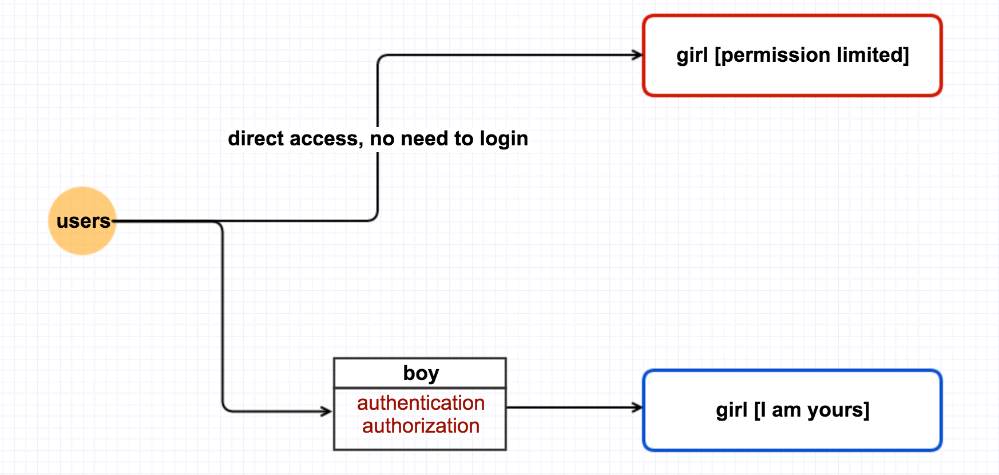
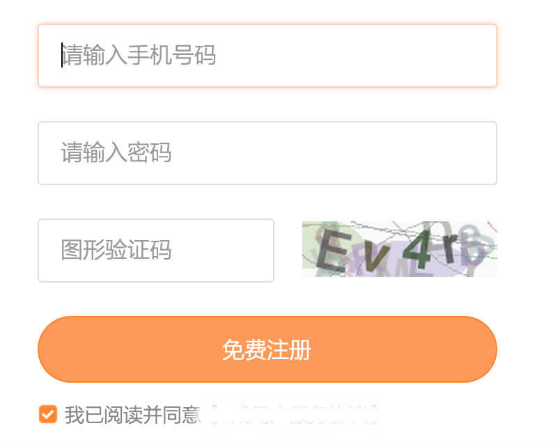
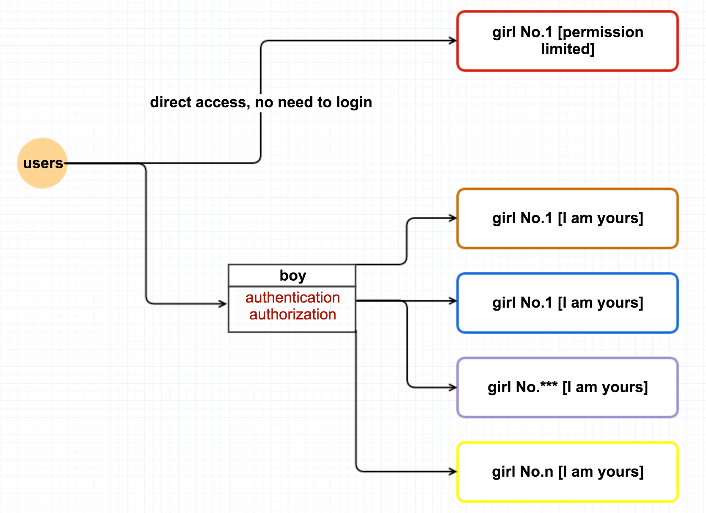
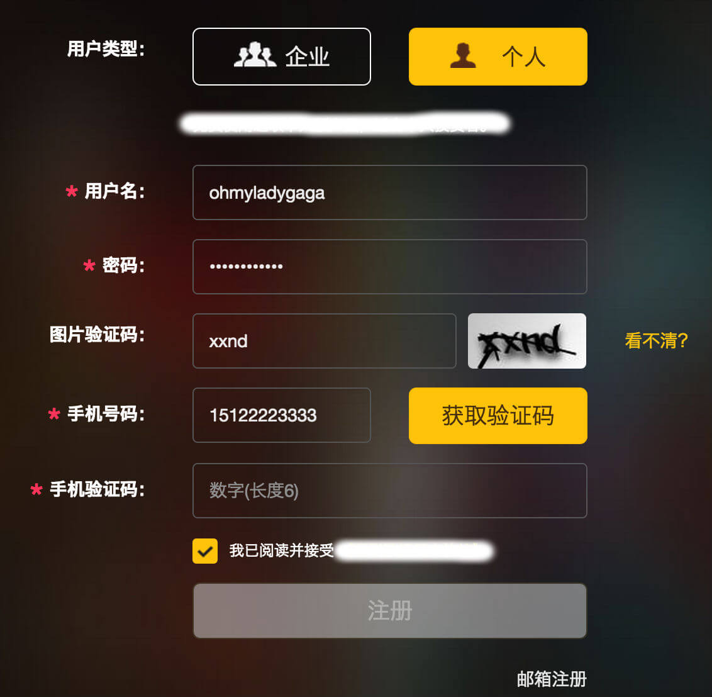

如何处理用户手机注册时收不到验证码的问题
2015-07-16
1. 写在前面
本文提到的所有案例【实际上就两个案例】，都是自己亲身经历过的，但为了安全友好起见，文中出现的一些数字都是假设的，如果有截图，都会把一些不便透露的信息隐藏的，我想只要能说明问题就行了。
2. 一次新增用户骤减的经历
那是之前做的一个项目【假设名字叫 Girl】，这个项目对外简单来说有两个访问等级【匿名和登陆】，然后如果需要登陆的话，需要经过一个统一的用户管理系统【假设名字叫 Boy】，boy ，girl 和 第三者【也就是用户 users】之间的关系可以用下面这张图一探一二。

然后我们定义一下新增用户，所谓新增用户，就是：那些对这个 girl 因为 permission limited 而不满的人，他们愿意通过 boy 注册或登陆之后，全方位地拥有 girl。
事件发生的时间我们假设在 1月1号 - 1月12号 这段时间，在1月9号之前的一段时间，我们发现 girl 项目每天的新增用户都稳定在 100 - 150 之间，然后1月10号，11号是周末，大家12号周一来上班，第一时间当然是看这个周末又新增了多少用户了，我勒个去，一看，才新增了20个不到，oh ~~ my ~~~ go~~~~d, what happened ?
好吧，蛋定后，我们就开始找原因了，新增用户数据不可能一下子就跳崖了啊~
“此处省略各种场景~~~”
最后原因定位了，是boy出问题了，关键时候掉链了。因为用户来注册的时候，很多都是通过手机注册的，手机注册需要输入那蛋疼的验证码，然后问题就出来了，11号，12号两天验证码发送出现了问题，选择用手机注册的新用户没法收到验证码，自然也就没法 wholly own that girl 了。当然最后修正好这个问题后，每日新增用户又稳定在 100 - 150 了。
3. 最近的一次经历
前几天一个师兄和我联系，他们做了一个创业公司。既然是师兄，当然要支持了，于是我就准备注册一下，但是同样的问题也发生了，同样也是收不到验证码，而且他们目前只支持手机注册，出现这个问题，比上面那个例子更严重，因为在问题解决之前，都不会有一个新增用户了。而且，聊下来，似乎都是我第一个发现这个问题的，不知道是不是他们后台没有做新增用户这块儿的监控。

4. 同一个坑，为毛还要掉两次
就在这周，第一个例子中的那个问题再次出现了。还是同样项目，还是同样的人员，还是同样的问题。
看到这个问题，我的第一反应是，怎么之前出现过的问题现在依然还在。为什么同一个坑，还要掉进去两次呢？我们就先不深究到底是不是用户那边出问题了。我的态度是：即使产品这边发送手机验证码的module是work的，而是用户手机端本身有问题，收不到短信验证码，那我们也要尝试替用户解决这个问题。下面我将分析一下，就算接触不了用户的手机，怎么最大限度地替用户解决问题。【 其实图片中已经说到了我的解决方案，但是为了说得更清晰，我在下面一节仔细讲讲】
5. 怎么避免掉进同一个坑
事实上，上面关于 girl 和 boy 项目的那张图有一个重要的遗漏，更完整的应该是下面这样子的：

我想这下子有经验的人应该一眼就能看出来，这个结构有一个很大的、并且也是很常见的问题了，就是传说中的单点故障。因为后面的很多菇凉【就是代号如 girl 的那些产品】，要想全部拥有它们，所有用户就都得先通过 boy 的这门关卡。如果说，哪天 boy 不高兴了，或者和 boy 相关的下游模块抽风了，那所有用户就都只能干瞪眼了。
怎么避免掉进同一个坑，这个问题很宽泛了，都是要具体场景，具体需求实际分析了。今天我想记录一下，我对手机注册这个坑的一个解决办法。我先把案例一中的注册页面贴到下面：

首先，注册的时候要提供至少两种注册方式：手机和邮箱，现在很多网站除了这两种方式，还有微信、qq登陆这种方式。比如说，上面提到的师兄的创业项目，在注册时只支持手机注册，他们在这个方面第一要改进的就应该是提供第二种注册方法。这是简单的第一步粒度很粗的解决方案。
两种注册方式真的就没有问题了吗？现在我们来看看案例一中的注册界面，如果这个时候，什么信息都填完整了，就等验证码的时候出问题了，那怎么办？首先，这个网站确实提供了邮箱注册方式，但尼玛这“邮箱注册”四个字也太小了吧，而且在图片里看起来还算容易找到，但是在整个网页里看，因为干扰元素太多，“邮箱注册”这四个字得花个吃奶的劲儿才能找到啊。也不知道是哪门子的交互设计砖家这样设计的，好了，言归正传。如果用户收不到手机验证码，那能有幸发现 “邮箱注册” 这四个小字的用户就很幸运了，可以转为邮箱注册。更值得幸运的是，这个网站，无论是手机注册还是邮箱注册，需要用户填写的信息都很少，即使手机注册失败，转到邮箱注册时，也不会再次花费用户的时间。
但是，很多情况下，用户注册时需要填写不少的信息，什么生日，性别，地址，验证问题等等，如果用户花了极大的耐心终于填完这些信息，然后突然发现尼玛验证码收不到了，而转为邮箱注册的话这些信息又得重新再写，这给用户留下的心理阴影，那得多大啊，反正我已经受伤很多次了。所以，即使在提供两种注册方式的情况下，在很多时候，还是会有细节上、体验上的问题。
Details make perfect。有了两种注册方式，再把细节处理好，我觉得那就足够好了。假设说，用户是以手机注册的，这个时候填完了很多附加信息，突然发现验证码收不到，有两种非常 nice 的解决方案：
- 提示，一定要提示用户可以转为邮箱注册，并且告诉用户，即使转为邮箱注册，之前填过的信息都不会丢失；
- 因为手机验证码都有一个时间限制，大多都是30-60秒，那前端完全可以监控，看倒计时完成之前，用户是否有在验证码输入框中输入数据，如果说，一个验证码的有效时间是60秒，但直到50秒时用户还没有在验证码输入框中输入数据，那么前端就可以提示用户，也许手机验证码会延迟很久【一定要用“延迟”，把责任推到运营商】，然后弹出一个邮箱输入框，告知用户，可以输入邮箱，通过邮箱来接收验证码即可。